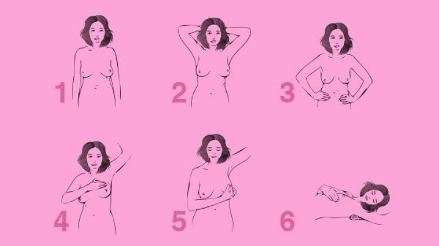
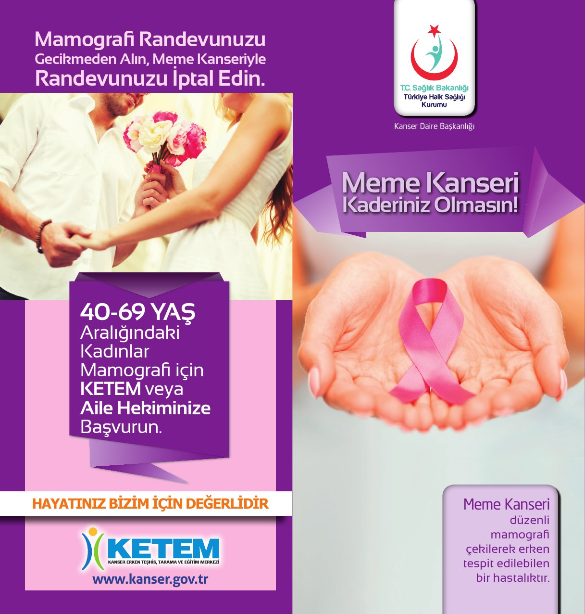

Meme Kanseri Kaderiniz Olmasın!!!!!
Dünya sağlık örgütü tarafından 2004 yılından itibaren meme kanserinde erken teşhisin önemi ve meme kanseri farkındalığı oluşturmak için tüm dünyada Ekim Ayı Meme Kanseri Bilinçlendirme ve Farkındalık Ayı olarak belirlenmiştir.
Meme kanseri, ülkemizde ve tüm dünyada kadınlarda en sık görülen kanserdir. Ayrıca en çok ölümlerin görüldüğü kanser türüdür. Erken teşhis edilirse tedavi edilebilen bir hastalıktır.
Meme kanserinden birincil korunma da öncelikli olarak sağlıklı bir yaşam tarzını benimsemek, sağlıklı beslenmek, düzenli fiziksel aktivitede bulunmak, ideal kiloda olmak ve ideal kiloyu korumak önemlidir. Sigara ve alkolden uzak durmak gerekir.
İkincil korunmada ise kendi kendine meme muayenesi yapmak, klinik meme muayenesi yaptırmak ve tarama amaçlı mamografi çektirmek gelmektedir.
MEME KANSERİ
Meme dokusunda hücrelerin kontrolsüz çoğalması sonucunda oluşur. Sadece kadınlarda değil erkeklerde de görülebilir.
Meme kanseri risk faktörlerini değiştirilebilir ve değiştirilemez olanlar olarak ikiye ayırabiliriz:
Değiştirilebilir olanlar; Obezite veya fazla kilolu olmak, yeterli fiziksel aktivite yapmamak, hiç doğum yapmamış olmak veya ilk doğumunu 30 yaşın üzerinde yapmış olmak, doğum kontrol hapı veya iğnesi kullanmak, menopoz sonrası hormon tedavisi almak, sigara ve alkol kullanmak.
Değiştirilemez olanlar; Kadın olmak, yaş almak, belirli genlere sahip olmak (BRCA 1, BRCA 2 gibi), aile öyküsü, bir memede kanser geçirmiş olması , memede bazı iyi huylu değişiklikler, erken adet ve geç menopoz öyküsü, göğüs bölgesine radyoterapi almak, meme dokusunun yoğun olması.
Meme kanserinin en sık belirtileri memede ağrısız, zamanla büyüyen kitlenin hissedilmesi ve ele gelmesidir.
Diğer belirtiler ise memede ağrı, meme başında çekilme, memede kaşıntı ve yanma olması, portakal kabuğu görünümü, meme cilt dokusunda değişiklikler oluşması, meme başında akıntı (özellikle kanlı akıntı olması), memede şişlik ve şekil değişikliği olmasıdır.
Tedavisinde her hastanın tedavisi farklılık göstermektedir. Oluşan kitlenin yeri, hastalığın evresi, hastanın yaşı, kişide başka sağlık problemlerinin olması tedavi şeklini belirlemektedir. Cerrahi, kemoterapi, radyoterapi gibi farklı tedavi yöntemleri uygulanmaktadır.
Meme kanserinden korunmanın mümkün olduğunu unutmayalım, muayene olmaktan utanmayalım, ertelemeyelim, kendimize zaman ayıralım.
20-39 yaş arası kadınlar için her ay düzenli kendi kendine meme muayenesi yapması, iki yılda bir klinik meme muayenesi yaptırması önerilmektedir.
40-69 yaş arası kadınlar için her ay düzenli kendi kendine meme muayenesi yapması ve yılda bir kez klinik meme muayenesi için doktora gitmesi ayrıca iki yılda bir mamografi çektirmesi önerilmektedir.
KENDİ KENDİNE MEME MUAYENESİ

Kendi kendine meme muayenesi yapmak kolaydır, herkes tarafından uygulanabilir, herhangi bir maliyet içermez, herhangi bir malzeme gerektirmeden yapılabilir.
Erken evrede hiç belirti göstermediği için meme kanserinin erken tanısı için kendi kendine meme muayenesi yapmaları büyük önem taşımaktadır. 20 yaşın üzerindeki tüm kadınların kendi kendilerine meme muayenesi konusunda yeterli eğitimi almaları düzenli ve belirli aralıklarla yapmaları oldukça önemlidir.
Her meme için 5 dakika zaman ayırmanız yani kendinize ayda bir kez toplam 10 dakika zaman ayırmanız yeterli olacaktır.
Kendi kendine meme muayenesi iki aşamadan oluşmaktadır: İlk aşamada gözle değerlendirme yapmak, ikinci aşamada ise elle muayene yapmak geliyor.
Gözle değerlendirme yaparken belden üst kısım çıplak olacak şekilde ayna karşısına geçilir. Önce kollar sarkık sonra kollar baş üstüne kaldırılarak, daha sonra eller belde ve öne doğru eğilerek vücuda pozisyon verilir ve her iki meme için gözlem yapılır.
Gözle değerlendirmede memelerin büyüklüğüne, simetrisine, derinin rengine, şekline, meme başlarına, koltuk altı meme çevresine bakılır.
Elle muayenede ise elin üç parmağının iç yüzü kullanılarak tarama yapılır. Elle meme muayenesi ayakta ve yatarak yapılır. Ayakta elle sol meme muayenesinde sol kol baş üzerine kaldırılarak sağ el 3 parmakla muayene yapılır. Sağ meme muayenesinde ise sağ kol baş üzerine kaldırılarak sol el üç parmak iç yüzüyle muayene yapılır.
Yatarak elle meme muayenesinde sırt üstü yatılır ve muayene edeceğiniz taraftaki omuz altına yastık yerleştirerek ve aynı taraftaki kolunuzu başın üstüne yerleştirerek pozisyon alınır. Dairesel hareketler yaparak ve uyguladığınız baskıyı artırarak muayene edilir. Koltukaltı ve meme başı (sıkarak akıntı olup olmadığına bakılır) muayene edilerek muayene tamamlanır.
MEME KANSERİ TARAMA PROGRAMI
Kadınlarda 40 yaşından itibaren başlayarak 40 - 69 yaş arasında yapılan toplum tabanlı taramalardır. Taramalar KETEM tarafından yürütülür.
Meme kanseri tarama programı kapsamında ayda bir kez kendi kendine meme muayenesi yapması için danışmanlığın verilmesi yılda bir klinik meme muayenesi ve 2 yılda bir mamografi çekimi gelmektedir.
Meme kanserinde ideal yöntem iki yılda bir uygulanan mamografi ile taramadır. Tarama sırasında her iki meme içinde ikişer poz film çekilir .Tarama filmleri iki ayrı radyoloji uzmanı tarafından ve birbirinden habersiz olarak okunur. Kişinin izlenmesinde her iki radyoloji uzmanının önerilerine de uyulmalıdır. Asıl tarama yöntemi mamografi olmakla birlikte taramaya katılan her kadına klinik meme muayenesi de yapılmalıdır.
Mamografi çekiminin normal gelmesi durumunda kişi bilgilendirilir. Bu sonuç ileride meme kanseri olmayacağını garantilemez. Kişinin her 2 yılda bir meme kanseri taraması yaptırması önerilir.
Anormal sonucu olan hastalarda bu sonuç kesin kanser tanısı değildir, ancak kişinin tekrar değerlendirilmesi gerektiği bilgisi verilmelidir. Kesin teşhisin konulabilmesi için memenin daha ayrıntılı olarak muayene edilmesi ve gerekirse biyopsi yapılması gerekmektedir. Bunun için genel cerrahi polikliniklerine yönlendirilmesi yapılmaktadır.

Ülkemizde her ilde bulunan Kanser Erken Teşhis, Tarama ve Eğitim Merkezlerinde (KETEM) ücretsiz olarak mamografi çekilmekte; ayrıca kendi kendine meme muayenesi eğitimleri ve broşürleri de ücretsiz olarak verilmektedir.
KETEM ‘den randevu alarak taramalarınızı yaptırabilirsiniz.
NİLÜFER KETEM: 0 224 441 74 79
OSMANGAZİ KETEM: 0 224 225 33 99
YILDIRIM KETEM: 0 224 366 55 99